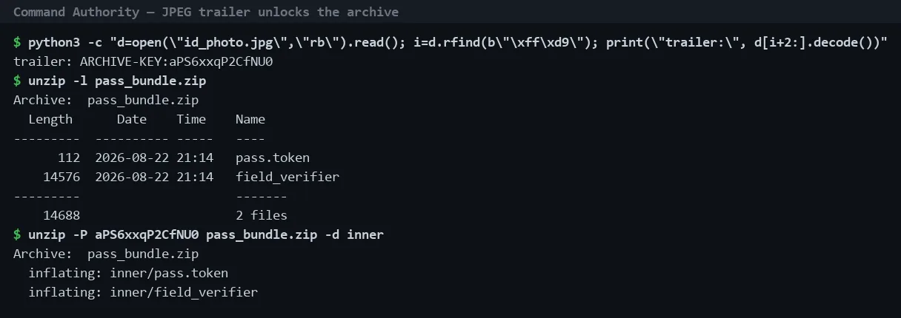
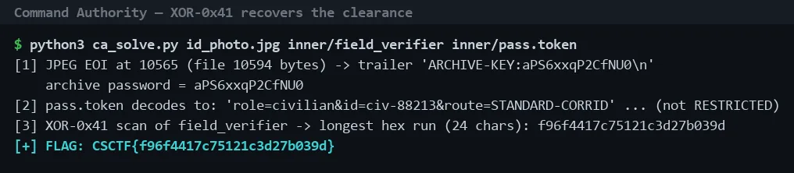

01Start point: id_photo.jpg and pass_bundle.zip
- What I did: opened the evidence packet command-authority-evidence.zip, which held a personnel image (id_photo.jpg) and a password-protected archive (pass_bundle.zip), then checked the JPEG for appended data.
- What I found: the JPEG ends at its normal EOI marker (FF D9) before the physical end of file. Bytes after the marker contain the ASCII marker ARCHIVE-KEY: followed by the archive password. This is appended metadata, not visible image content.
- Thinking: the zip was password protected and nothing else in the packet gave a password, so the only other file, the photo, had to carry it.
02Pivot: the trailer key opens pass_bundle.zip
- What I did: used the recovered key to extract pass_bundle.zip. It contains pass.token and a stripped x86-64 ELF named field_verifier.
- Thinking: the key came from the image trailer, so the extracted verifier and token were the real target of the challenge.

03Pivot: the verifier compares against a hidden value
- What I found: the program's usage string is field_verifier <token_file_b64>. Static strings reveal the accepted route distinction (RESTRICTED versus STANDARD-CORRIDOR) and the success message. The supplied token decodes to a standard-corridor civilian record, so it is not the restricted clearance.
- Thinking: the given token only takes the standard route, so the restricted clearance had to be stored inside the verifier itself.
04Flag: XOR 0x41 over the comparison data
- What I did: inspected the verifier's embedded comparison data. The encoded byte sequence is XOR-obfuscated with 0x41. I XORed each byte with 0x41 to recover the exact 24-character clearance value, f96f4417c75121c3d27b039d. The required submission wraps that value in the challenge flag format.
- Thinking: the recovered bytes were a clean run of lowercase hex, which is what a clearance value should look like, so the key 0x41 was right.
- Result: CSCTF{f96f4417c75121c3d27b039d}
